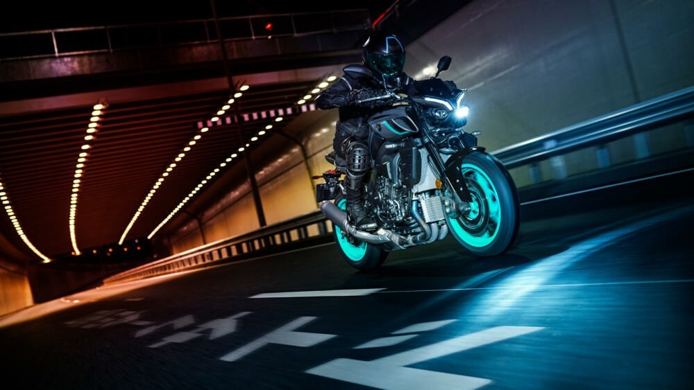
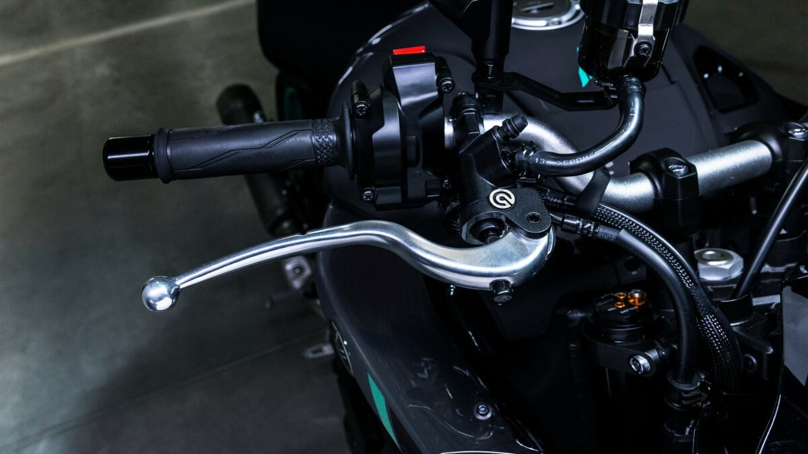
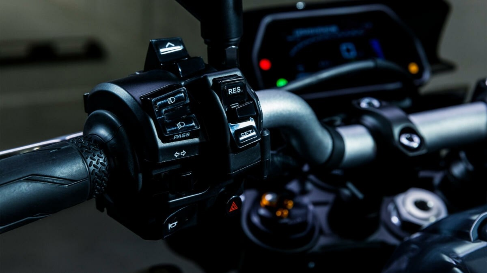
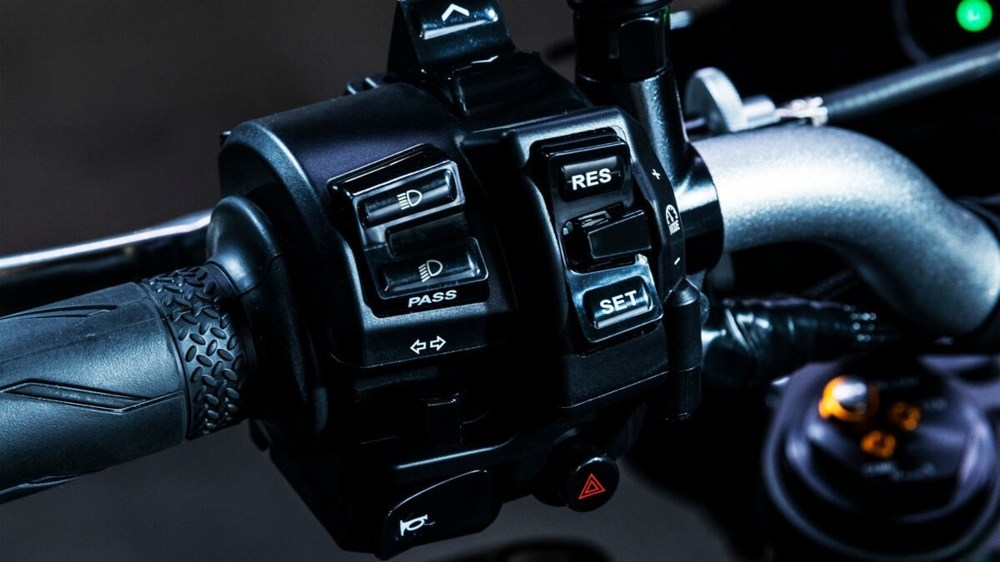
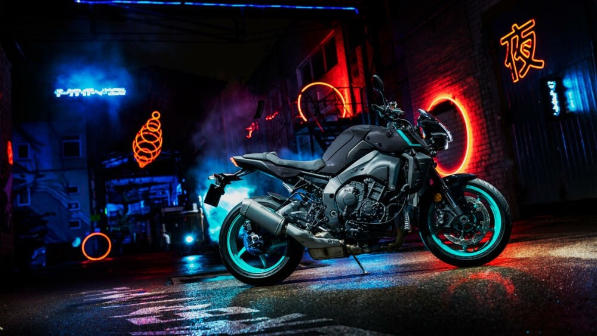
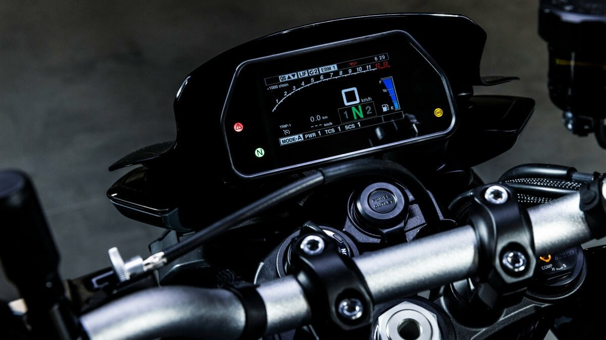
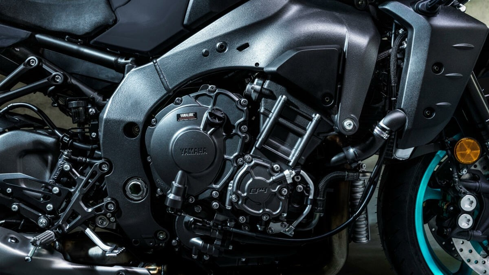

Hyper Naked · 998 cm³ · SP
L'Hyper Naked la plus puissante jamais construite par Yamaha. Le moteur de la R1, la suspension Öhlins électronique, l'adrénaline à l'état pur.
La reine de la gamme MT
Développée avec les technologies de pointe du moteur et du châssis de la R1, la MT-10 est « la reine incontestée du couple », conçue pour ceux qui veulent posséder l'une des motos les plus remarquables du moment. La version SP pousse le curseur plus loin encore : suspension Öhlins semi-active électronique, livrée Icon Performance, finitions exclusives. La reine impose le respect.
Ce qu'en dit la presse
— Moto-Station
Moteur CP4 998 cm³
Du rugissement de l'admission à l'échappement en titane, en passant par la séquence d'allumage unique du moteur CP4 de 998 cc : « plus vous la connaîtrez, plus vous ne pourrez vous en passer » (Yamaha). 166 ch, 112 Nm de couple sensationnel, sonorité exaltante. La poignée APSG avec modes PWR sélectionnables vous laisse choisir le tempérament.

Suspension Öhlins électronique
C'est la signature du SP : une suspension Öhlins semi-active qui ajuste l'amortissement en temps réel, selon la route et votre style. Sur l'Estérel comme sur circuit, elle offre « un comportement routier de très haut niveau ». Le grand confort et la rigueur sportive, enfin réconciliés.

Électronique R-Series
Centrale inertielle 6 axes et arsenal complet d'aides au pilotage : contrôle de traction, de glisse, de cabrage, de frein moteur. Maître-cylindre radial Brembo, étriers radiaux 4 pistons, disques 320 mm, quickshifter bidirectionnel, écran TFT 4,2" avec sélection des modes. « Votre MT-10 se comporte exactement comme vous le souhaitez. »

En bref
Au-delà des chiffres, ce sont ces détails qui transforment chaque sortie en événement.
La référence du roadster sportif
— Moto-Station
Galerie



Ils l'ont essayée
Revue de presse
« La MT-10 SP offre un comportement routier de très haut niveau grâce à ses suspensions Öhlins électroniques. »
Lire l'essai Moto-Station« Sport et confort » — l'équilibre rare salué comme le point fort majeur.
Lire l'essai Moto-Station« Sensations premium » : la version SP hisse la MT-10 dans le haut de gamme.
Lire l'essai Moto-StationPour les puristes
Passez à l'action
Essayez la MT-10 SP à Cannes. Sans engagement, réponse sous 24h.